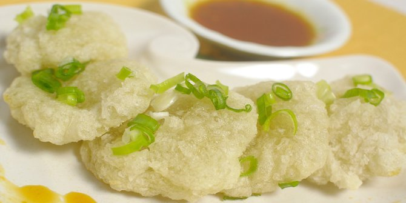
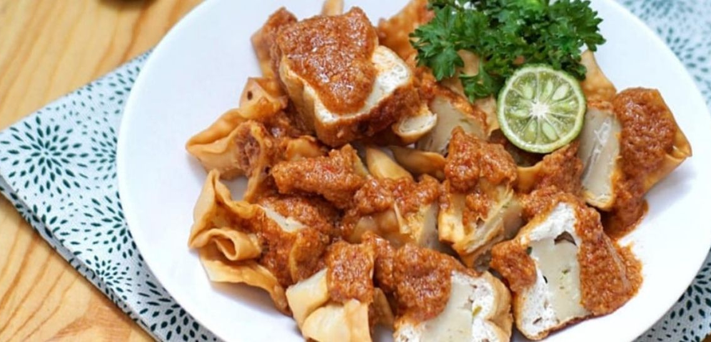
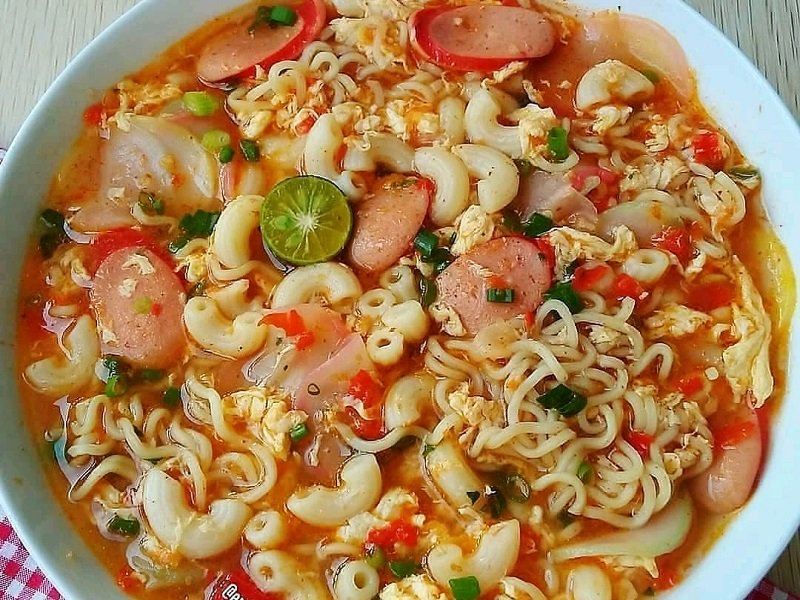

Bahan :
250 gram Tepung Kanji
50 gram tepung terigu serbaguna
2 batang daun bawang, iris halus
2 batang seledri, iris halus
Bumbu :
3 siung bawang putih
1 sendok teh penyedap rasa ayam (opsional)
1 sendok teh merica bubuk
2 sendok teh garam
Cara membuat Cireng :
1. Campurkan tepung kanji dengan tepung tapioka hingga tercampur sempurna.
2. Tambahkan daun bawang, seledri yang telah diiris halus, bawang putih yang telah dihaluskan, penyedap rasa ayam, merica, dan garam.
3. Tambahkan air panas perlahan-lahan sembari diaduk atau diuleni hingga kalis.
4. Adonan yang telah tercampur sempurna kemudian mulai dibentuk. Bentuk sesuai selera. Jika ingin pipih seperti koin, tipis saja jangan terlalu tebal. Jika ingin dibuat bulat-bulat kecil saja.
5. Panaskan minyak goreng dalam wajan. Setelah panas, adonan yang telah dibentuk tadi kemudian dimasukkan atau digoreng hingga matang.
Bahan :
15 lembar kulit pangsit
5 buah tahu putih ukuran kecil, dibelah dua segitiga, dikeruk tengahnya
Minyak untuk menggoreng
300 gram ikan tenggiri, haluskan
3 buah daun bawang, iris tipis
3 siung bawang putih, haluskan
1/2 sendok teh penyedap rasa
1 sendok teh garam
1/4 sendok teh merica bubuk
2 sendok teh gula pasir
3 putih telur
150 ml air es
150 gram tepung sagu
25 gram tepung terigu protein sedang
Bahan sambal kacang :
200 gram kacang tanah kulit goreng
5 siung bawang putih, goreng
6 buah cabai merah keriting, goreng
5 sendok makan gula merah
1/2 sendok makan garam
650 ml air hangat
2 sendok makan air asam jawa (dari 1 sendol makan asam jawa dilarutkan dalam 2 sendok makan air)
Bahan Pelengkap :
4 sendok makan kecap manis
2 buah jeruk limau, dibelah 2 bagian
Cara membuat Batagor :
1. Campur ikan tenggiri yang sudah dihaluskan dengan daun bawang, bawang putih, penyedap rasa, garam, merica bubuk, dan gula pasir. Masukkan dalam chopper. Blender supaya lebih halus dan tercampur rata.
2. Masukkan putih telur dan air es. Blender kembali. Lalu tambahkan tepung sagu dan tepung terigu. Blender sampai tercampur rata.
3. Bagi menjadi 2 adonan. Satu bagian isi ke dalam tahu putih. Sisanya masukkan dalam kulit pangsit. Rekatkan sisi kulit pangsit dengan air. Bentuk segi empat.
4. Panaskan kukusan. Kukus adonan selama 30 menit dengan api sedang sampai matang. Dinginkan.
5. Setelah dingin, goreng siomay dan batagor dalam minyak yang sudah dipanaskan dengan api sedang sampai matang. Tiriskan.
6. Sambal kacang: haluskan kacang tanah, bawang putih, cabai merah keriting, gula merah, dan garam. Tambahkan air hangat dan aduk rata. Lalu masak sambal kacang sambil diaduk sampai kental. Setelah mengental, tambahkan air asam Jawa. Aduk rata. Matikan api.
7. Sajikan batagor dengan siraman sambal kacang dan bahan pelengkapnya.
Bahan :
100 gram kerupuk aci
7 lembar daun caisim/sawi hijau
5 butir bakso sapi
1 butir telur
Secukupnya air
Secukupnya garam dan gula
Bumbu yang dihaluskan
2 ruas kencur
2 butir bawang merah
1 butir bawang putih
5 buah cabe rawit merah (sesuai selera pedas)
3 buah cabe keriting merah
Cara membuat Seblak :
1. Pertama, rendam dulu kerupuk dengan air biasa (kira-kira 30 menit) biar pas dimasak cepat lembek dan ga keras, lalu potong2 daun caisim dan bakso sapi sesuai selera
2. Haluskan bumbu lalu tumis sampai harum, setelah harum tambahkan air kira-kira 1 gelas (mau dibanyakin airnya jg gpp klo mau berkuah kayak yg aku bikin), tunggu air sampai mendidih
3. Masukan telur yg sebelumnya sudah di kocok lepas (kalau ga di kocok dulu bau amis) jadi wajib di kocok dulu yaa hehe
4. Selanjutnya masukan kerupuk, bakso dan caisim, serta gula dan garam, masak hingga matang dan sajikan selagi hangat